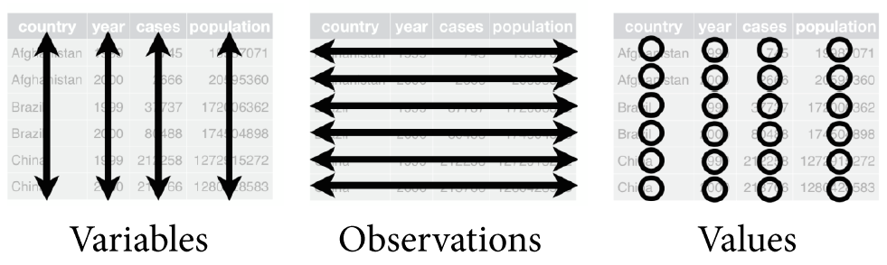
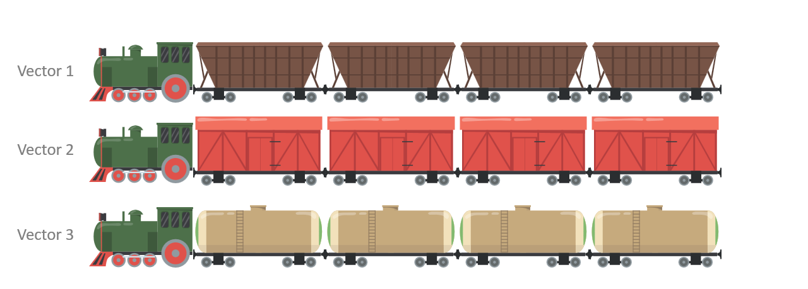
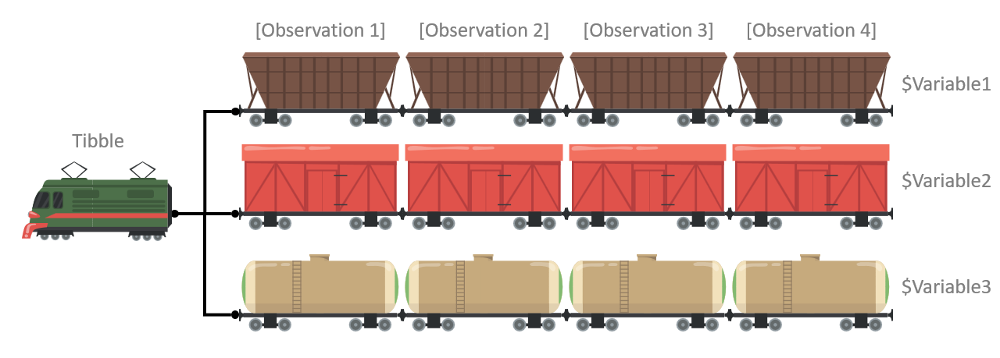

# SETUP: Install and load the tidyverse package
# Extras pane > Packages tab > Install
library(tidyverse)
# ==============================================================================
# LESSON: Create a tibble from vectors
x <- c(10, 20, 30, 40)
x
y <- x * 2 - 4
y
my_tibble <- tibble(x, y)
my_tibble
# ==============================================================================
# USECASE: You can mix different types of vectors in a single tibble
first_names <- c("Adam", "Billy", "Caitlyn", "Debra")
age_years <- c(12, 13, 10, NA)
guests <- tibble(first_names, age_years)
guests
# ==============================================================================
# TIP: To save time, you can also create the vectors in the tibble call
gradebook <- tibble(
grade = c(95, 83, 90, 76),
letter = c("a", "b", "a-", "c")
)
gradebook
# ==============================================================================
# PITFALL: Don't try to combine tibbles with different lengths
y <- c(1, 2, 3)
x <- c("a", "b")
tibble(y, x) #error
# ==============================================================================
# LESSON: You can "extract" a vector from a tibble using $
mytibble <- tibble(x = c(1, 2, 3, 4, 5), y = "test")
mytibble$x
mytibble$y
# ==============================================================================
# PITFALL: Don't try to extract a vector that doesn't exist
mytibble$z #error
# ==============================================================================
# USECASE: Get information about a tibble
dim(gradebook)
colnames(gradebook)Statistical Methods
Data Frames / Files / Exploration
Unit A | Chapter 03
Lecture 03b
Developed by Jeffrey M. Girard

Roadmap: More Programming
Data Frames
Data Files
Data Exploration
Data Frames
Tidy Data
- There are many ways to store data
- We will be learning the tidy data format
- Data should be rectangular
- Each variable has its own column
- Each observation has its own row
- Each value has its own cell

Other Data Advice
- Name all variables in the first row
- This is called a header row
- Avoid merged cells for data storage
- These are okay for communication
- Avoid empty cells whenever possible
- Mark missing data as
NA
- Mark missing data as
- Avoid formatting-as-data for storage
- e.g., non-redundant color-coding
Tidying Example 1
Not Tidy
| Name | Ann | Bob | Cat | Dom |
| Age | 13 | 10 | 11 | 11 |
| Weight | 56.4 | 46.8 | 41.3 | 43.3 |
❌ Here, each row is a variable and each column is an observation.
Tidy
| Name | Age | Weight |
| Ann | 13 | 56.4 |
| Bob | 10 | 46.8 |
| Cat | 11 | 41.3 |
| Dom | 11 | 43.3 |
✔️ Here, each column is a variable and each row is an observation.
Tidying Example 2
Not Tidy
| Names: | Ann | Bob | Cat | Dom |
| Age | Weight | |||
| 13 | 56.4 | |||
| 10 | 46.8 | |||
| 11 | 41.3 | |||
| 11 | 43.3 |
❌ Here, we have data that is not rectangular because the Names variable has its own row.
Tidy
| Name | Age | Weight |
| Ann | 13 | 56.4 |
| Bob | 10 | 46.8 |
| Cat | 11 | 41.3 |
| Dom | 11 | 43.3 |
✔️ Here, we have made the data rectangular by moving the Names variable to its own column.
Tidying Example 3
Not Tidy
| country | year | cases / population |
| Afghanistan | 1999 | NA / 19987071 |
| 2000 | 2666 / 20595360 | |
| Brazil | 1999 | 37737 / 172006362 |
| 2000 | 80488 / 174504898 | |
| China | 1999 | 212258 / 1272915272 |
| 2000 | 213766 / 1280428583 |
❌ Here, we have merged cells and two values stored in a single cell.
Tidy
| country | year | cases | population |
| Afghanistan | 1999 | NA | 19987071 |
| Afghanistan | 2000 | 2666 | 20595360 |
| Brazil | 1999 | 37737 | 172006362 |
| Brazil | 2000 | 80488 | 174504898 |
| China | 1999 | 212258 | 1272915272 |
| China | 2000 | 213766 | 1280428583 |
✔️ Here, we have un-merged the countries and separated the cases and populations variables into columns.
Tibbles
- R works particularly well with tidy data
- We store tidy data in data frames or tibbles
- Tibbles are just fancier data frames
(i.e., they have a few extra features)
- Tibbles are just fancier data frames
- To use tibbles, we need the tidyverse package
- Tibbles are constructed from one or more vectors
- The vectors must have the same length
- They can contain different types of data
Parallel Vectors

We start with three separate vector objects that all have the same length.
We set it up so that the \(n\)-th car in each train corresponds to the same observation.
Tibble

Then we combine the vectors into a single tibble (or data frame) object.
Now, as the tibble moves around, the variables always stay together.
Tibbles Live Coding
Data Files
- Data is usually stored in data files
- Importing files into R is called reading
- Exporting files from R is called writing
- A convenient data file type is a CSV
- This stands for comma-separated values
- A CSV file is easy to share with other people
- The tidyverse package can read/write CSVs
- Other packages can read/write other types (e.g., readxl, haven, rio, googlesheets4)
Data Files Live Coding
# SETUP: Load the tidyverse package (if you haven't yet)
library(tidyverse)
# ==============================================================================
# SETUP: Download gradebook.csv from the course website into your project folder
# NOTE: You can see the file in Extras pane > Files tab.
# You can open it in another program (e.g., Microsoft Excel).
# ==============================================================================
# USECASE: Read in a file containing data
old_gradebook <- read_csv("gradebook.csv")
old_gradebook
# NOTE: read_csv() will examine and guess the data type of each variable.
# You can tell it the data type of each variable, but that is more advanced.
# ==============================================================================
# USECASE: Tell R which codes were used to denote missing values
old_gradebook <- read_csv("gradebook.csv", na = "?")
old_gradebook
# ==============================================================================
# USE CASE: Reading in other types of data
# The readxl and googlesheets4 packages work with spreadsheets
# The haven package works with files from SPSS, SAS, and STATA
# The rio package tries to detect the type and read in anythingData Exploration
Data Verification
- It’s always a good idea to start with verification
- Check that your variables are the correct type
- Configure your factors’ levels and labels
- Establish ordinal factors’ ordering
- Explicitly set your missing values to NA
- Check variables’ extrema and distributions
- Check for erroneous and outlying values
- Check the shape of continuous distributions
- Check the overlap of categorical levels
Data Verification Live Coding
# SETUP: We will use the tidyverse and easystats packages
library(tidyverse)
library(easystats)
# ==============================================================================
# SETUP: We will use the penguins data and configure its factors
penguins <- read_csv("../../data/penguins0.csv")
penguins
penguins$species <- factor(penguins$species, levels = c(1, 2, 3),
labels = c("Adelie", "Chinstrap", "Gentoo"))
penguins$island <- factor(penguins$island, levels = c(1, 2, 3),
labels = c("Biscoe", "Dream", "Torgersen"))
penguins$sex <- factor(penguins$sex, levels = c(1, 2),
labels = c("female", "male"))
penguins
write_csv(penguins, "penguins.csv")
# ==============================================================================
# LESSON: Then check the summary statistics for problems
# Note the NA counts: 2 penguins were never measured and 11 more were never
# sexed. Real data has holes, and summary() is where you find them.
summary(penguins)
# ==============================================================================
# LESSON: Describe the distribution of continuous variables
describe_distribution(penguins, body_mass)
describe_distribution(penguins)
# ==============================================================================
# LESSON: Describe the distributions of discrete variables / factors
data_tabulate(penguins, species)
data_tabulate(penguins, is.factor)Data Visualization
- Variable distributions are critical in data analysis
- What are the most and least common values?
- What are the extrema (min and max values)?
- Are there any outliers or impossible values?
- How much spread is there in the variable?
- What shape does the distribution take?
- Distributions describe a single variable’s variation
- We also visualize many variables’ covariation
Data Visualization Live Coding
# PREP: We will need the tidyverse package and some example data
library(tidyverse)
penguins <- read_csv("../../data/penguins.csv")
# ==============================================================================
# USECASE: Visualize the variation of a discrete variable / factor
qplot(x = species, data = penguins, geom = "bar")
qplot(x = island, data = penguins, geom = "bar")
# ==============================================================================
# USECASE: Visualize the variation of a continuous variable
qplot(x = flipper_len, data = penguins, geom = "histogram")
qplot(x = flipper_len, data = penguins, geom = "boxplot")
qplot(x = body_mass, data = penguins, geom = "histogram")
qplot(x = body_mass, data = penguins, geom = "boxplot")
# ==============================================================================
# USECASE: Visualize the covariation of two continuous variables
qplot(x = flipper_len, y = body_mass, data = penguins, geom = "point")
# ==============================================================================
# USECASE: Visualize the covariation of two discrete variables
qplot(x = species, y = island, data = penguins, geom = "jitter")
qplot(x = species, fill = island, data = penguins, geom = "bar")
# ==============================================================================
# USECASE: Visualize the covariation of a discrete and a continuous variable
qplot(x = body_mass, y = species, data = penguins, geom = "boxplot")
qplot(x = body_mass, y = species, data = penguins, geom = "violin")